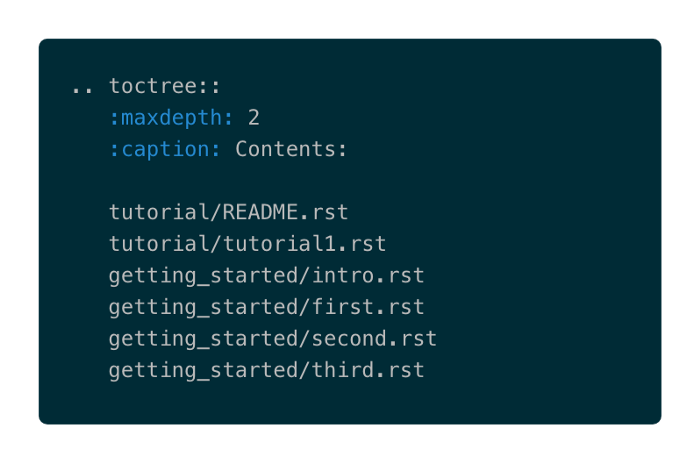

Librería de Documentación Sphinx¶
Instalación en Linux¶
Este manual corresponde la instalación de la librería Sphinx en sistema opertivo Linux.
Prerequisitos
Contar con una versión de phyton instalada
Instalación con Pip
$ pip install -U sphinx
Creación del directorio de trabajo
Se debe crear un directorio de trabajo para poner estructura de archivos que necesita Sphinx para organizar un proyecto. Por lo general existe la convención de llamarlo, simplemente, doc. Entra en ese directorio
Crear la estructura con el comando
$ sphinx-quickstart
¡Estamos listos paa comenzar nuestra documentación..!
Los directorios que comienzan con underscore son aquellos que tendrán archivos generados por Sphinx. El archivo Makefile se utilizará, como veremos, para automatizar el proceso de generación de la documentación. Un archivo clave es index.rst el cual servirá como página de bienvenida a la documentación, así como también de índice de los archivos de documentación
Sphinx utiliza como source archivos tipo .rst creados con un lenguaje de marcas denominado reStructuredText. Es un formato similar a markdown, pero con una serie de marcas ampliadas especialmente diseñadas para facilitar el trabajo de documentación automática de código. Se puede encontrar más información en la documentación de Sphinx.
Indice de los Documentos
Una vez escrito los archivos en .rst, debemos indicar a sphinx donde debe encontrar dichos Documentos, esto lo definimos en el archivo index.rst
Los archivos debe ir dentro de la directiva .. toctree::, debajo de :caption: Contents: (es relevante respetar la indentación como se muestra en el ejemplo).
{kind=link}
Esta es la prueba ..